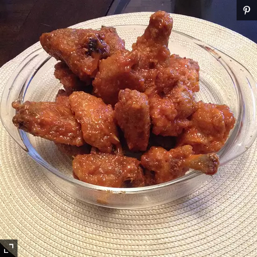

Recipe Book
Hot Wings

Description
Warning! Be aware of the heat that these wings pack! You will get addicted if you're not careful!
Ingredients
- 4 pounds chicken wings
- 1 teaspoon garlic powder
- 1/2 teaspoon ground black pepper
- 1 cup tomato-based hot pepper sauce
- 2 tablespoons vinegar-based hot pepper sauce
- 1/4 cup grated Parmesan cheese
- 3 tablespoons butter, melted
Steps
- Preheat an outdoor or indoor grill to a high heat. Lightly grease the grill
- Season wings with garlic powder and ground black pepper. Cook wings on the preheated grill until they are very crispy.
Turn wings frequently as they will burn easily.
- While the wings are girlling, in a large bowl, combine both hot sauces with garlic,powder, Parmesan cheese and melted butter.
- When the wings are finished cooking, place them in the large bowl of hot sauce mixture and stir until they are coated.